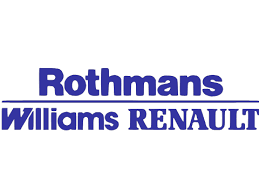

Williams F1
Senna joined Williams in 1994, Williams at this time was the best team on the grid, and hiring Senna was consired the best move for both team and driver. However 1994 started with problems, rules changes meant that many of the techincal parts that Williams were running and that had made them so dominate, hade to be removed, and calling for a complete redesign of the car.
Senna struggled with the new Williams, in the openning race in Brazil, he spun the car ad was forced into retirement. In the second race, The Pacific GP, Senna was hit from behind by Mika Hakkinen, leading to another retirement. The third round of the season was at Imola. This was Senna's final race. The weekend had multiple controversies, on Friday practice, fellow country man Rubens Barrichello, came of the track at high speed and his Jordan mounted the wall. He was lucky to walk away with only cuts and brusing.
On Saturday, Simtek driver Ronald Ratzenberger, took a corner too fast and his car hit a wall, he was killed on impact.
On Sunday, Senna would take his final pole of his career, on lap 7 he exited the fast Tamburello corner, his Williams drove straight, not taking the corner, and driving staght into a wall. Senna was pronunced death at 18:40 CEST (16:40 GMT).